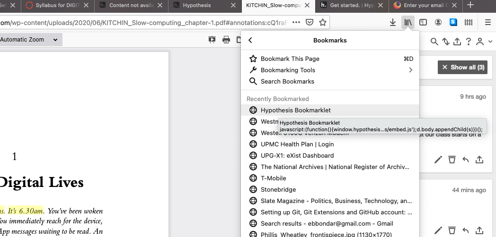

Get Startedpage, look in step 2 (where it says
Add Hypothesis to your browser).
Hypothes.is Bookmarklet. Right-click on the link and add it to the bookmarks for your browser
Hypothes.is Bookmarklet. Click on it, and you will open the Hypothes.is controls so you can annotate.
Here is a screen capture from Firefox:
